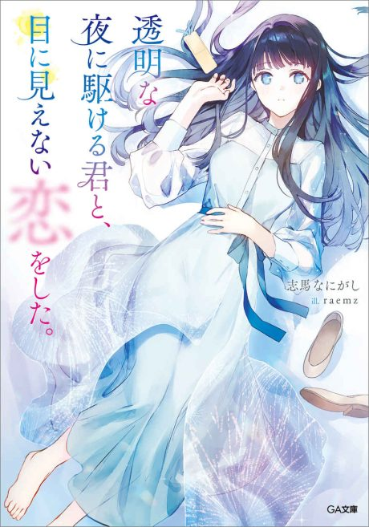

Love Unseen Beneath the Clear Night Sky
透明な夜に駆ける君と、目に見えない恋をした。
We haven't found where the anime ends in the light novel yet.
8.4AniList score
—Animeter, no votes yet
12episodes
Anime finished. Where does the story go next?
StatusNo source yet
We looked for where the anime ends in the light novel but found no source we trust yet. The light novel is 13 chapters, finished.